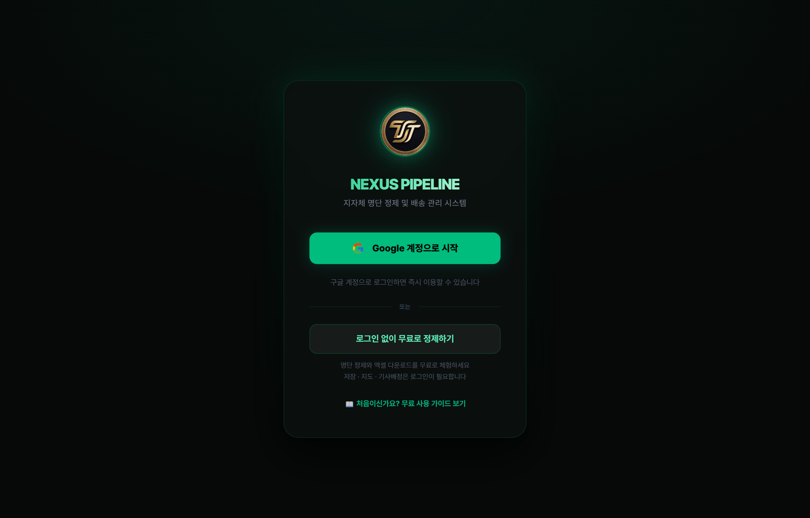
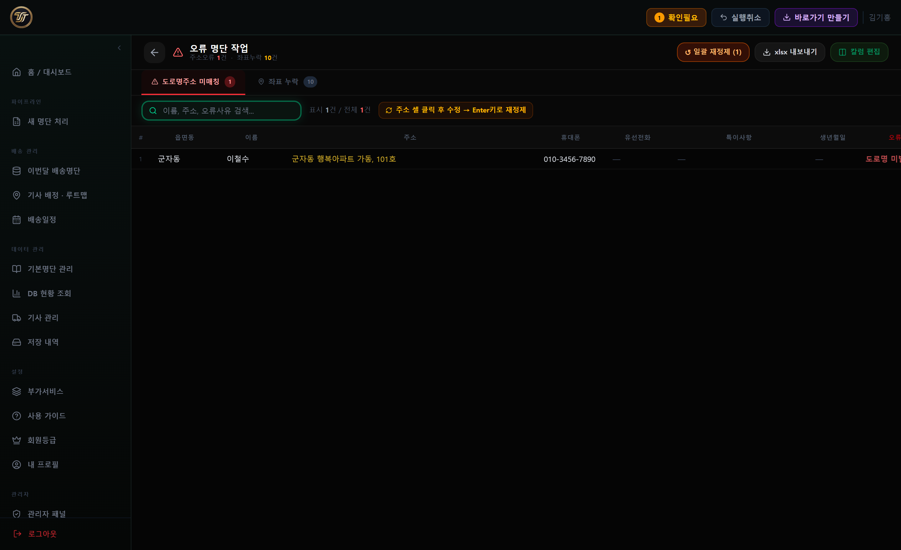
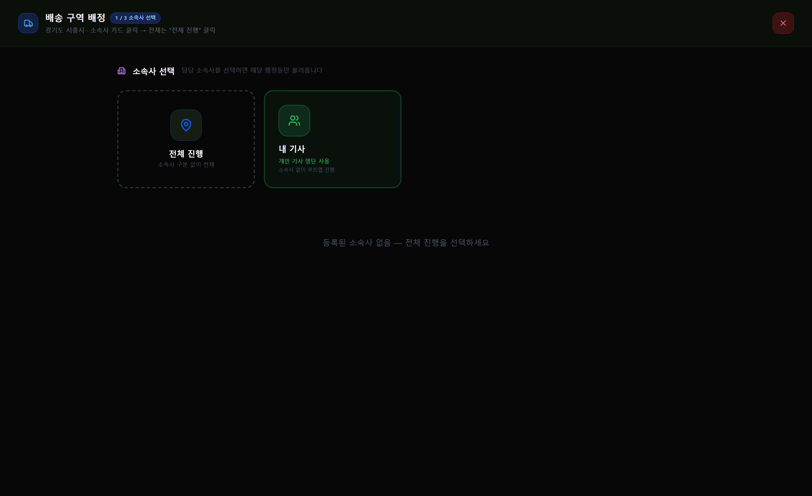

● 유료 사용 가이드 · STEP BY STEP
누구나 따라 하는
배송 명단 완성 가이드
VIP 이상 유료 기능(좌표 매칭·기사 배정·루트맵·배송순번)까지, 화면을 보며 순서대로 따라 하면 완성됩니다. 처음 쓰는 분도, 컴퓨터가 서툰 분도 그대로 따라만 하세요.
OVERVIEW
💳 유료에서 열리는 기능
무료(정제·다운로드·저장)에 더해, 유료 등급에서 ‘실제 배송 운영’ 기능이 열립니다.
| 등급 | 추가로 열리는 기능 | 지자체 |
|---|
| 🔵 VIP (월 1만원) | 좌표 매칭(Kakao) · 기사 배정 · 루트맵 · 배송순번 · 기사 공유 링크 | 5개 |
| 🟣 VVIP (협의) | VIP 전체 + AI 배송 최적화 + DB 현황(전체 조회) | 20개 |
| 💎 사파이어 (협의) | VVIP 전체 + 전담 지원 + 커스텀 설정 | 무제한 |
이 가이드 읽는 법: 파란 ①②③ 번호 순서대로 누르기만 하면 됩니다. 단축키 표시는 키보드로 빠르게 하는 방법이에요. 초록 ‘쉽게 설명’ 상자는 어려운 말을 쉬운 말로 풀어 줍니다.
BIG PICTURE
🗺️ 전체 흐름 (이 순서대로 갑니다)
파이프라인
1 로그인→
2 업로드→
3 컬럼확인→
4 정제→
5 저장→
6 좌표→
7 기사등록→
8 자동배정→
9 순번→
10 공유
회색 1~5는 무료에서도 되는 단계, 하늘색 6~10이 유료 배송 기능입니다.
STEP 1
🔑 로그인하고 지자체 정하기
logis-op.web.app — 로그인

1
“Google 계정으로 시작”을 누릅니다.
구글 로그인 창이 뜨면 본인 계정을 고르세요.
2
처음이면
이름·지자체를 등록합니다.
예: 이름 “홍길동”, 지자체 “경기도 시흥시”. 유료 등급이면 지자체를 여러 개 등록할 수 있어요.
3
대시보드(첫 화면)에서 작업할
지자체 카드를 확인합니다.
카드를 누르면 그 지자체의 배송명단/기본명단으로 바로 갑니다.
쉽게 설명: ‘지자체’는 시·군·구예요. 내가 배송 명단을 다루는 지역을 정해 두는 거예요. 한 번 정하면 다음부터 자동으로 기억합니다.
처음 가입하면 이 환영 화면이 한 번 나옵니다. “시스템 가동 시작”을 누르면 대시보드로 들어갑니다. (대시보드 우측 ‘3D 인트로 감상’으로 다시 볼 수 있어요.)
STEP 2
📁 엑셀 파일 올리기
2
정제 방식에서
“쉬운 정제”를 고릅니다.
대부분 이걸로 충분합니다. 직접 조정하고 싶으면 “고급 정제”.
3
엑셀 파일을
끌어다 놓거나 클릭해서 올립니다.
.xlsx · .xls · .csv 가능. 여러 개 한 번에 OK.
실제 화면입니다. 왼쪽 메뉴에 사용 가이드·회원등급도 보입니다.
주의: 업로드 후 지자체·적용 월을 확인하는 창이 뜹니다. 자동 감지되지만 맞는지 한 번 확인하고 확인을 누르세요.
STEP 3
🔗 시트·컬럼 확인
1
시트가 여러 개면 정제할
시트를 선택합니다.
‘수급/의료/생계’는 기초수급자, ‘차상위’는 차상위로 자동 분류돼요.
2
이름·주소·연락처·행정동·포수 칸이 맞게 연결됐는지 봅니다.
자동으로 맞춰지고, 틀린 것만 드롭다운으로 바꾸면 됩니다.
컬럼 매핑
| 엑셀 칼럼 | 인식된 항목 |
|---|
| 성명 | 이름 ✓ |
| 거주지 | 주소 ✓ |
| 핸드폰 | 연락처 ✓ |
| 신청수량 | 포수 ✓ |
쉽게 설명: ‘포수’는 배달할 물건(쌀 등)의 개수예요. 나중에 기사에게 일을 똑같이 나눌 때 기준이 됩니다.
STEP 4
🔧 주소 정제 & 결과 검토
1
잠깐 기다리면 주소가 표준 도로명주소로 정리된 표가 나옵니다.
2
확인필요 표시된 줄만 한 번 봐주세요.
원본 주소가 불완전한 경우예요. 칸을 클릭하면 바로 고칠 수 있습니다.
3
실수하면 Ctrl + Z (되돌리기)로 복원됩니다.
실제 정제 결과 화면입니다. 주소가 도로명 + 동·호수 + (법정동, 건물명) 형식으로 정리됩니다.
자동 처리: 이름 5자 초과 정리 · 오타 교정(자가학습) · 통/반 제거 · 동·호수 형식 통일 · 전화번호 정리 · 특수문자 뒤 메모 분리 — 손 안 대도 됩니다.
확인필요 줄 처리
‘확인필요’ 건수를 누르면 오류 명단 작업 화면이 열립니다. 주소 칸을 클릭해 고치고 Enter로 재정제하면 됩니다.
오류 명단 작업 (확인필요)

실제 화면입니다. 도로명주소 미매칭·좌표 누락 등 확인필요 건을 한곳에서 정리합니다.
STEP 5
💾 클라우드에 저장 (이번달 명단)
1
결과 화면에서 “클라우드 저장”을 누릅니다.
2
지자체·월을 확인하고 저장하면
이번달 배송명단에 보관됩니다.
다음에 왼쪽 메뉴 ‘이번달 배송명단’에서 언제든 다시 엽니다.
쉽게 설명: 저장하면 내 인터넷 보관함에 들어가요. 컴퓨터를 꺼도 사라지지 않고, 다음 달에 이어서 작업할 수 있어요.
STEP 6
📍 좌표 매칭 VIP↑
기사 배정·지도 표시를 하려면 각 주소를 지도 위 점(좌표)으로 바꿔야 합니다.
2
상단
좌표 → 매칭 버튼을 누릅니다.
좌표 없는 주소를 카카오 지도에서 자동으로 찾아 점을 찍습니다.
3
잘못 찍힌 점은 오류지정으로 표시 후 삭제·재매칭합니다.
중요: 좌표가 다 찍혀야 다음 단계(자동 배정)가 켜집니다. ‘좌표없음’ 건수가 0이 될 때까지 매칭하세요.
STEP 7
🚚 기사 등록 (소속 기사 관리) VIP↑
2
기사 추가로 이름과
용량(capacity %)을 입력합니다.
용량은 그 기사가 감당할 일의 비율이에요. 100% 기준, 더 많이 하면 120%, 적게 하면 70%처럼.
3
등록한 기사는 루트맵에서 자동 배정·구역 나누기에 쓰입니다.
실제 화면입니다. 상단에서 소속사를 고르고 기사 관리 탭에서 기사를 추가합니다.
쉽게 설명: 일할 기사들의 명단을 먼저 만들어 두는 단계예요. 용량을 다르게 주면, 일을 그 비율에 맞춰 자동으로 나눠 줍니다.
STEP 8
🧩 기사 자동 배정 (루트맵) VIP↑
버튼 하나로 모든 배송지를 기사별 구역으로 자동으로 나눕니다. 구역은 서로 겹치지 않고, 용량 비율대로 공평하게 나뉩니다.
배송 구역 배정 — 시작 (1/3)

실제 화면입니다. 루트맵 진입 시 전체 진행 또는 내 기사를 고르고 시작합니다. 이후 지도에서 아래처럼 자동 배정됩니다.
1
(선택) 각 기사 카드의
“핀 꽂기”로 기사 거점을 지도에 찍습니다.
핀을 찍으면 그 위치를 기준으로 좌우/상하 구역이 깔끔하게 나뉩니다.
2
상단
“자동 N등분”을 누릅니다.
모든 배송지가 기사별 색으로 칠해집니다. 같은 아파트·같은 주소는 한 기사에게 묶입니다.
3
손볼 곳은 브러시로 지도를 드래그해 그 기사에게 다시 칠합니다.
4
50포 이상 큰 아파트는 좌측 ‘대형단지’에서 동 단위로 나눌 수 있습니다.
색마다 기사 한 명의 구역입니다. 색이 섞이지 않게(구역 겹침 0) 나뉘면 잘 된 거예요.
AI 배송 최적화 (VVIP↑): 더 똑똑한 알고리즘으로 구역을 나눠 총 이동거리를 더 줄여 줍니다.
STEP 9
🔢 배송 순번 자동 만들기 VIP↑
1
기사 배정이 끝난 뒤 상단
“순번”을 누릅니다.
기사별로 도는 순서(1·2·3…)를 도로 흐름·아파트 층 순서로 자동 계산합니다.
2
“분석”으로 점프(멀리 튐)·도보 후보를 점검합니다.
3
필요하면 목록에서 직접 드래그하거나 번호를 고칠 수 있습니다.
쉽게 설명: 기사가 “어디부터 어디 순서로 돌까?”를 자동으로 정해 줘요. 가까운 집끼리 이어서 돌도록 만들어 시간을 아낍니다.
STEP 10
📤 기사 공유 · 내보내기 VIP↑
2
필요한 것을 고릅니다:
담당자 엑셀(배송표) · KML 경로(지도앱) · 배송루트 묶음 · 기사 공유 링크
3
기사 공유 링크를 카톡으로 보내면 기사가 폰으로 자기 배송 순서를 봅니다.
내보내기 메뉴
📄 담당자 엑셀
🗺 KML 경로
📦 배송루트 묶음
🔗 기사 공유 링크
4
마지막으로
“최종 저장”을 눌러 배정을 확정합니다.
구역 겹침이 0건이어야 최종 저장됩니다.
STEP 11
📅 배송 일정 관리
1
왼쪽 메뉴 “배송일정”에서 날짜별 배송 계획을 관리합니다.
2
지자체·월별로 일정을 잡고 진행 상태를 추적합니다.
고객 노트 DB
📒 기본명단(고객 노트) 관리
자주 쓰는 고객 정보(특이사항·기사·배송순번)를 모아두면 다음 달 명단에 자동으로 붙습니다.
- 왼쪽 메뉴 “기본명단 관리”에서 지자체별 고객 DB를 봅니다
- 이름+생년월일(또는 전화)로 같은 사람을 알아보고 특이사항·기사·순번을 이식합니다
- “부재 시 경비실”, “문 앞 배송” 같은 메모를 한 번 저장하면 계속 재사용됩니다
쉽게 설명: 단골 고객 수첩이에요. 한 번 적어두면 다음 달에 자동으로 옮겨 적어 줘서, 매번 다시 쓸 필요가 없어요.
변경 확인
🔄 전월 비교 · 주소 변경 확인
1
이번달 명단에서 “주소 정제”를 누르면 저장된 명단을 다시 정제합니다.
2
“주소변경확인”으로 지난달과 달라진 주소를 확인합니다.
같은 행정동이면 ‘이사’, 다른 행정동이면 ‘주민센터 배송’으로 자동 분류돼요.
3
행정동별로 변경이 많으면 경고가 떠서, 한 번에 점검할 수 있습니다.
FAQ · 단축키
❓ 자주 묻는 질문 & 단축키
단축키
| 키 | 기능 |
|---|
| Ctrl + Z | 되돌리기(Undo) — 최대 10단계 |
| Enter | (주소 칸) 재정제 + 오타 자동 학습 |
| 표 칸 클릭 | 해당 값 직접 수정 |
자주 묻는 질문
‘자동 N등분’ 버튼이 회색이라 안 눌려요.
좌표 매칭이 끝나지 않았기 때문입니다. 먼저 상단 ‘좌표 → 매칭’으로 좌표없음 건수를 0으로 만드세요.
구역(색)이 서로 섞여요.
기사 핀을 장벽(큰길·하천·철도)의 올바른 쪽에 찍으면 구역이 깔끔히 나뉩니다. 그래도 섞이면 ‘혼재’ 버튼으로 해소 후, 브러시로 손봅니다. 겹침이 0이어야 최종 저장됩니다.
큰 아파트가 한 기사에게 너무 몰려요.
좌측 ‘대형단지’에서 50포 이상 단지를 동(棟) 단위로 여러 기사에게 나눌 수 있습니다.
지난달 기사 배정을 그대로 쓰고 싶어요.
루트맵 상단 ‘세션 ▾ → 이전달 승계’를 누르면 같은 이름 기사의 좌표·기사·순번을 이번달에 자동으로 가져옵니다.
기사가 순서를 바꿔 달라고 해요.
기사 공유 링크로 들어온 순번 요청은 ‘순번요청’에서 확인하고, 유선 확인 후 공식 명단에 반영합니다.
무료 기능만 보고 싶어요.